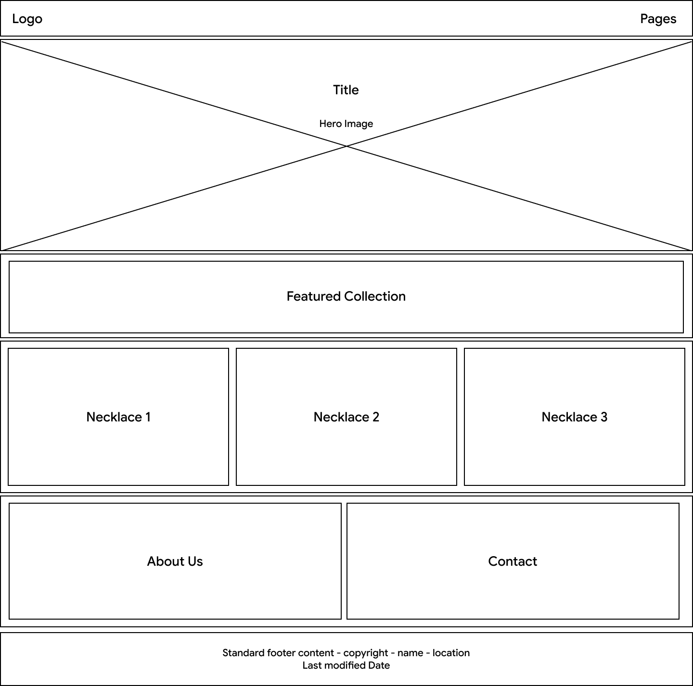
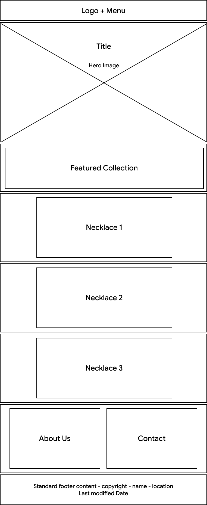

Site Name
This name represents a handmade Jewelry business that offers necklaces and accessories with unique designs. The name “Jenn” is my mom's name, and it makes the business easy to recognize.
Site Purpose
The purpose of the Jenn Jewelry website is to showcase handmade necklaces and jewelry collections. Visitors will be able to explore different accessories, learn about available designs and materials, and find information about how to place an order.
Scenarios
- What necklace styles are currently available?
- How can I order a necklace?
- What materials are used to make the jewelry?
Color Scheme
Color #856147: Will be used for the header, footer, and important elements.
Color #47230e: Will be used for headings and body text.
Background Color #F3E9DC: will be used for the main background.
Typography
Lobster Two: Will be used for the main title and headings.
Lato: Will be used for the body text.
Wireframes

